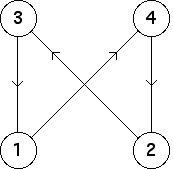

3. (b)
|
| The bin transitions are |
| Consequently, the only occupied length 2 addresses are 41, 24, 32 and 13. |
| The empty length 2 addresses are the remaining twelve: 11, 12, 14, 21, 22, 23, 31, 33, 34, 42, 43 and 44. |
| Note the allowed bin-to-bin transitions
determine a cycle, |
| From this we see the driven IFS converges to the 4-cycle consisting of the points having addresses (3241)infinity, (2413)infinity, (4132)infinity, and (1324)infinity. |
These bin transitions can be encoded in the transition graph
|  |
Return to Exercises.